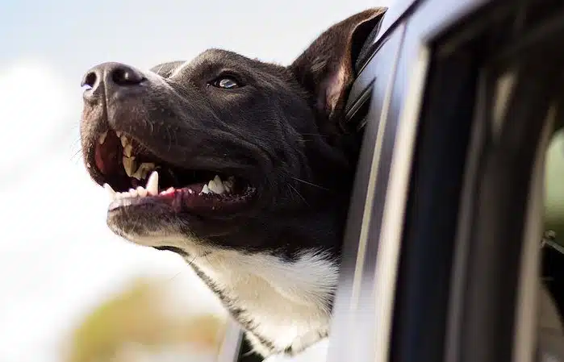
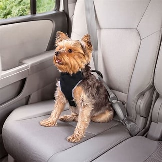

ESSENTIAL PET TRAVEL SAFETY TIPS

Preparing for a Pet-Friendly Journey
Embarking on a journey with your furry friends can be a delightful adventure, but it’s crucial to prepare meticulously. Safety, comfort, and the well-being of your pets should be at the forefront. Whether you’re planning a short drive or a long vacation, these tips will ensure a smooth and safe travel experience for you and your pets.
1. Secure and Comfy Transportation
- Choosing the Right Carrier: Selecting an appropriate carrier is the first step. It should be well-ventilated and robust, providing enough space for your pet to sit, stand, and turn around with ease. The comfort of your pet during the journey largely depends on this choice.
- Securing the Carrier: Once you have the right carrier, ensure it is securely anchored in your vehicle. This prevents it from shifting or tipping during the drive, reducing the risk of injury to your pet.
